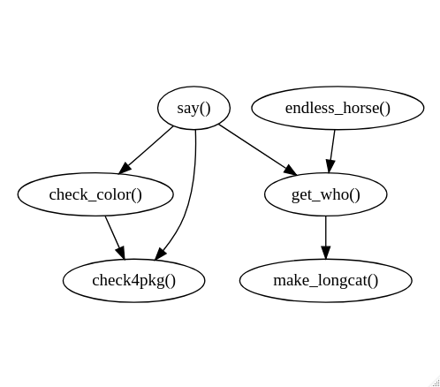

foodwebr makes it easy to visualise the dependency graph of a set of functions (i.e. who calls who). This can be useful for exploring an unfamiliar codebase,or reminding yourself what you wrote ten minutes ago
Basic usage
Say we have a bunch of functions in the global environment, some of which call each other:
library(foodwebr)
f <- function() 1
g <- function() f()
h <- function() { f(); g() }
i <- function() { f(); g(); h() }
j <- function() j()A call to foodweb() will calculate and display a graph of the dependencies, i.e. who calls who.
foodweb()
Note that function j() is not shown because it doesn’t interact with any of the other functions.
foodweb() looks at the global environment by default. If you want to look at another environment you can either pass a function to the FUN argument of foodweb() or pass an environment to the env argument. If FUN is provided then the value of env is ignored, and the environment of FUN will be used.
You can use this to map all the functions in a package. I’m using cowsay here as it’s small enough that the output is readable.
if (requireNamespace("cowsay", quietly = TRUE)) {
foodweb(cowsay::say)
}
In case you want to do something with the graphviz output (make it prettier, for example), use as.text = TRUE. This returns the graphviz specification as a character vector.
foodweb(as.text = TRUE)
#> digraph g {
#> "g()" -> { "f()" }
#> "h()" -> { "f()", "g()" }
#> "i()" -> { "f()", "g()", "h()" }
#> }Digging deeper
foodwebr also exposes the workhorse functions in case you want to play around with them.
function_matrix()
The starting point is to compute the function matrix. This idea, and much of the implementation, was taken from mvbutils::foodweb(). The function matrix is 1 if the function on the y-axis calls the function on the x-axis, and 0 otherwise. function_matrix() looks at functions in the global environment by default, but you can specify another environment using the env argument.
funmat <- function_matrix()
funmat
#> CALLEE
#> CALLER f g h i j
#> f 0 0 0 0 0
#> g 1 0 0 0 0
#> h 1 1 0 0 0
#> i 1 1 1 0 0
#> j 0 0 0 0 0Note that self-calls are ignored (funmat["j", "j"] is zero even though j() calls itself).
graph_spec_from_matrix()
The graph_spec_from_matrix() function translates the function matrix into a character string containing a graphviz specification:
Visualisation
We can visualise the graph specification using Diagrammer::grViz().
DiagrammeR::grViz(graphvis_spec)